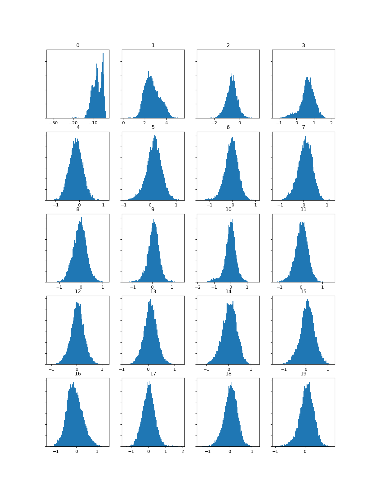
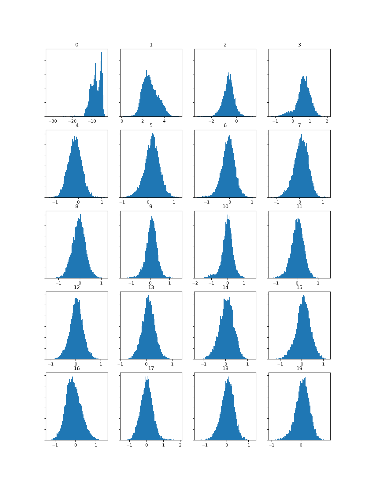

The three tracks I looked at were Rachmolchovic's Masquerade Waltz, Tchaiovsky's Swan Lake, and Strauss' Waltz Potpurri. The following data will be in this order.
 


Looking at the MFCC analysis, the differences are at their most apparent in feature 0, particularly in the case of Swan Lake. From here, features 1-3 remain distinct between the three pieces, with the peaks of Swan Lake being the shortest, followed by Masquerade Waltz, all the way to Potpurri. However, feature 4 and onward become less distinct between the three pieces, with a few exceptions; the peaks of Potpurri are notably smaller, save for one outlying point. Overall, due to the distinctness of features 0-3, I believe one would be able to tell these pieces apart from the MFCC histograms alone.